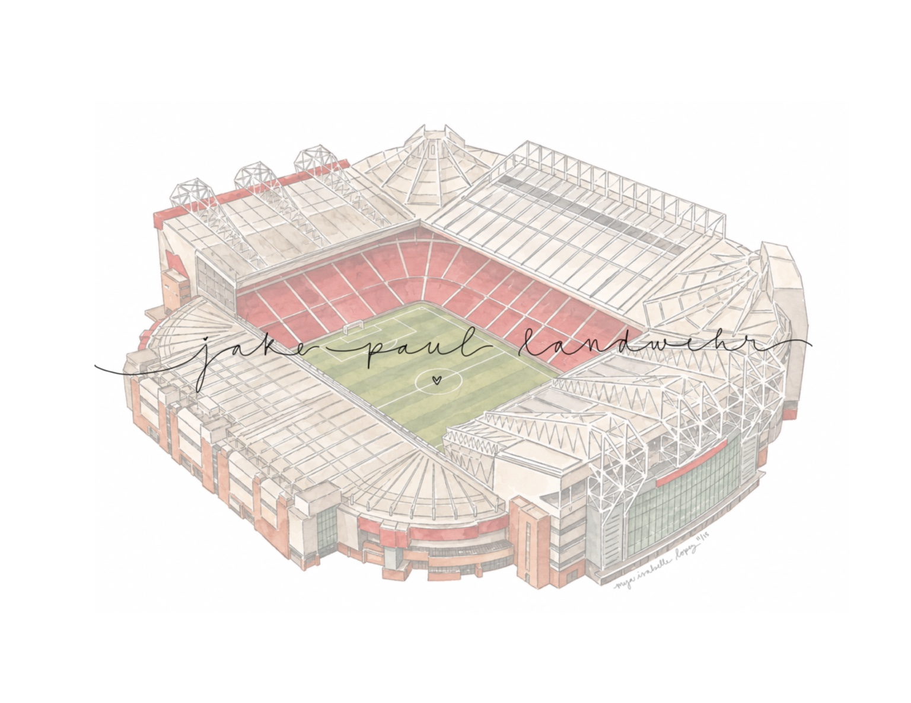

for jake, with love
11/16/2026

HAPPY BIRTHDAY JAKE (BLACK HOODIE) LANDWEHR!!!
p.s. please appreciate the fact that making this required me to resurrect whatever remains of my high school computer science education, which, for the record, i got a C in. CSS was never my strong suit, although i was an absolute GOD at Python and HTML. unfortunately, that was when i was 15, and i am now aged, technologically retired, and apparently incapable of remembering how to do any of this. what should've been a relatively simple birthday surprise took approximately two business weeks, several personal crises, and an unreasonable amount of determination. and somehow, i STILL couldn't finish it on time. so please admire the website. i have suffered for my art. and as if relearning how to code wasn’t enough, you also had the audacity to consider my digital artwork of old trafford CHEATING. so naturally, i had to take a brief mental health intermission to crash out because i needed the entire thing to be perfect. this was supposed to be a cute little birthday surprise, not my senior capstone project. you’re welcome.